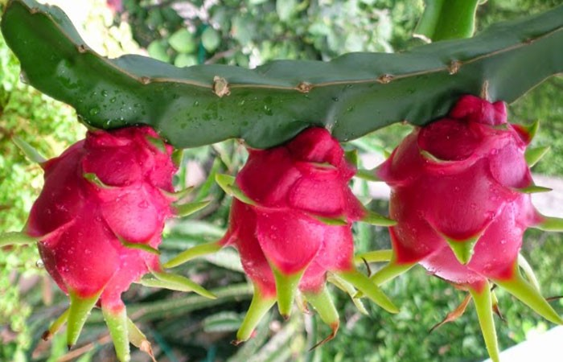
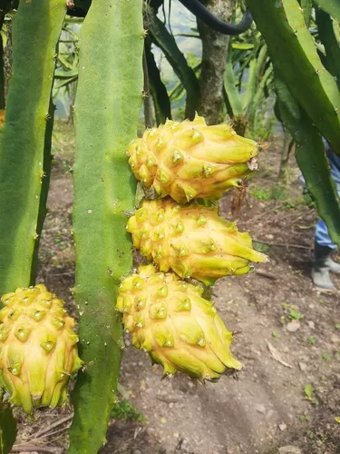
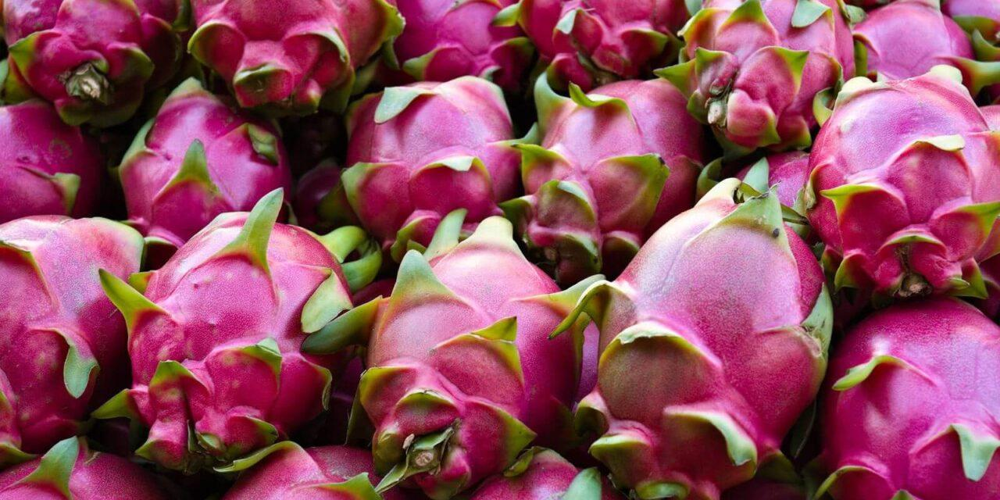

La pitaya, comúnmente conocida como fruta del dragón, es el fruto de varias especies de cactus del género Hylocereus y Selenicereus. Originaria de América Central y México, esta fruta es famosa por su apariencia vibrante y su sabor dulce.
Video obtenido de: Elvis Carrera
Variedad con piel roja y pulpa blanca, conocida por su dulzura y textura crujiente.
Variedad más dulce, con piel amarilla y pulpa blanca, muy apreciada en la gastronomía.
Variedad con piel morada y pulpa roja, destaca por su sabor dulce y un poco más intenso que otras variedades.
| Aspecto | Descripción |
|---|---|
| Clima | Prefiere climas cálidos y húmedos, con temperaturas entre 20 °C y 30 °C. |
| Suelo | Requiere suelos bien drenados, ricos en materia orgánica y con un pH entre 6 y 7. |
| Riego | Necesita riego regular, pero debe evitarse el encharcamiento. |
| Plagas y Enfermedades | Puede ser susceptible a plagas como pulgones y enfermedades fúngicas. |
| Recolección | Los frutos se cosechan cuando están completamente maduros, generalmente a mano. |